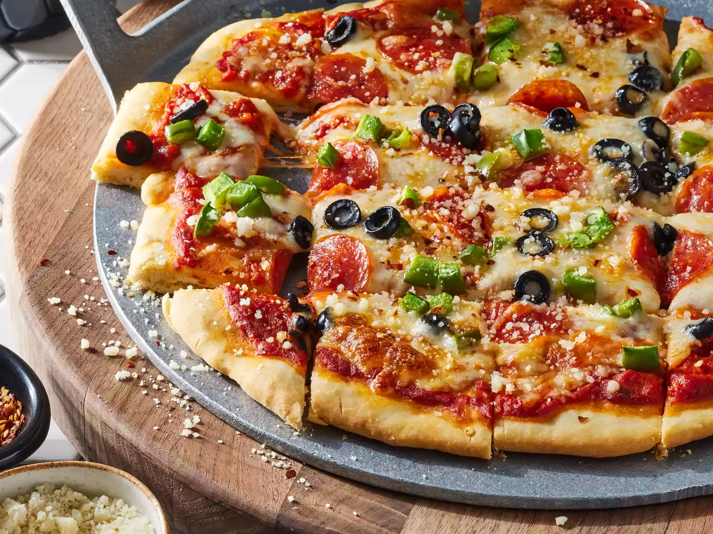

Recept na najlepsiu pizzu

Na priprava
chod kupit nasledujuce ingrediencie
- Flour: This yeastless pizza crust starts with all-purpose flour.
- Baking powder: Without yeast, the pizza dough needs baking powder to rise.
- Salt: A pinch of salt enhances the flavor and strengthens the gluten.
- Milk: You’ll need ½ cup of fat-free milk.
- Olive oil: Olive oil locks in moisture and keeps the dough from drying out
Postup
- Gather all ingredients.
- Mix flour, baking powder, and salt together in a bowl; stir in milk and olive oil until a soft dough forms.
- Turn dough onto a lightly floured surface and knead 10 times. Shape dough into a ball; cover with an inverted bowl and let sit for 10 minutes.
- Roll dough into a 12-inch circle on a baking sheet.
- Add your favorite toppings and bake. Enjoy!
Na zaver sa pojeb
Dobru chutty kokot